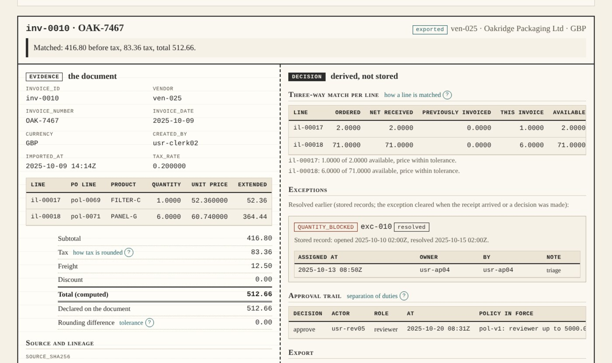
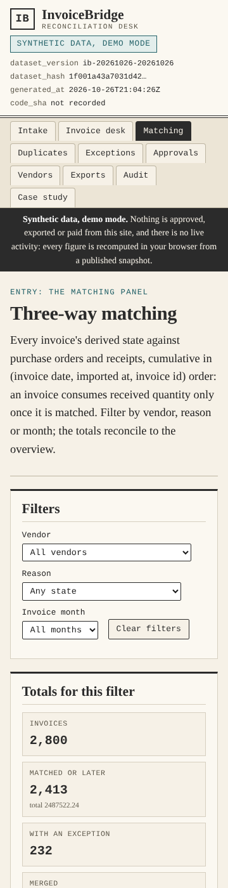

Dashboard · Finance operations · FastAPI · React · 2026-10
Which Invoices Can Be Paid, Which Are Blocked, and Why?
InvoiceBridge: accounts-payable intake reconstructed from recorded facts. Every invoice is matched three ways against its purchase order and cumulative receipts, duplicates from re-sent files are merged rather than paid twice, approvals need a second person, exports are idempotent batches, and every figure is re-derived from the documents rather than read from a status. The known answer: an order for 10 at 20.00, a receipt of 6, an invoice for 6 is 120.00 before tax and 132.00 with 10% tax, a second invoice for 4 is blocked until goods arrive, and importing the first twice leaves one obligation. Synthetic data; project 05 of the Business Data Lab.

- Problem
- The payables queue argues about documents. A re-sent PDF becomes a second payment; an invoice for goods that never arrived is approved because the purchase order exists; a price-list change…
- Role
- Built and written by Rishit Raj Mathur; the case study names its sources and checks.
- Tools
- Python 3.11 (Decimal money, exact rational rates), PostgreSQL 16 (append-only import lineage, recursive match in the SQL reference), FastAPI 0.162 (commands with idempotency keys, separation of duties, 401/403/409/422 contracts, 501 for the unbuilt), SQL reference recomputation of every metric from facts, never from stored statuses, TypeScript + React 18 + Vite, Playwright 1.55 (journey, 4 widths, 200% zoom), GitHub Actions (postgres:16 service, hosted runners only), 320 Python tests, 227 TypeScript golden checks, 71 browser tests
- Status
- Case study with a live demo
- Evidence
- Open InvoiceBridge · Code on GitHub

Everything is synthetic: the 40 vendors, 1,200 purchase orders, 2,800 invoices and every figure come from a seeded generator whose designed relationships (one vendor group that invoices before goods arrive, one vendor whose price list changed in March, re-sent PDFs clustering at month-end) and twelve injected defects are published in an injection manifest. The public site is a static demo over a published snapshot; nothing is approved, exported or paid from it and there is no payment connection. The transactional behaviour (importing with lineage, validating, merging duplicates, matching, assigning exceptions, approving under separation of duties, exporting idempotent batches, applying credit notes) is verified separately on GitHub-hosted runners against a transient PostgreSQL. Built from a written specification by a coordinating session delegating bounded work to implementation subagents; not a measurement of any real company.
01The problem
The payables queue argues about documents. A re-sent PDF becomes a second payment; an invoice for goods that never arrived is approved because the purchase order exists; a price-list change turns every invoice from one vendor into an exception nobody owns; the clerk who keyed an invoice approves it; and an export re-run after a timeout sends the same batch twice. Nobody can say, for a given invoice, which fact blocks it.
InvoiceBridge fixes the record first: every import keeps its source hash and lineage; identity is vendor, invoice number, date and computed total, so a duplicate is merged and never paid; matching is cumulative against net receipts in document order; approval needs a different person under the policy in force; export is a named, idempotent batch; and every number on every screen is derived from the documents, with a warning wherever the workflow state has fallen behind them.
02What I built
Two implementations of one contract, checked against a hand calculation and each other.
- The contract: import identity as vendor, normalised invoice number, date and computed total, with the same bytes caught first; money in decimals rounded half-up once per document; the three-way match per line against the purchase order and net receipts, cumulative in document order, with the reasons NO_PO_LINE, CURRENCY_MISMATCH, QUANTITY_BLOCKED and PRICE_VARIANCE in that order and tolerances carried in the inputs; approval by a different person than the creator under the policy in force; one exception per invoice and type with an append-only assignment history; exports as named idempotent batches with a content hash; credit notes once each, reducing the payable and never moving cash.
- A known-answer fixture written first: an order for 10 at 20.00, a receipt of 6, an invoice for 6 gives 120.00 before tax and 132.00 with 10% tax and one obligation; a second invoice for 4 is quantity-blocked; the first invoice imported again is merged, so one obligation remains; plus a rejected-record variant (a receipt against an unknown order line and a negative quantity that would have freed units already invoiced) and an empty variant. A standard-library script reproduces all 405 figures and checks the 7 fixture hashes.
- The Python domain, PostgreSQL schema and FastAPI commands: every metric derived from recorded facts, never from a stored status, with a warning per invoice when the workflow state has fallen behind; import, validate, find duplicates, match, assign, approve, reject, export and credit under row locks with idempotency keys bound to the actor; 320 tests on a GitHub-hosted runner against PostgreSQL 16, and an independent SQL recomputation (recursive, no floating point) that agrees with the domain on the fixtures, on three snapshot cutoffs and on 120 random worlds.
- The static site: the same contract in TypeScript with integer arithmetic only, an invoice desk that puts the document and its lineage beside the derived match, exceptions, approval trail and export row, an intake simulation with duplicate detection, a matching panel, an exceptions queue and read-only approval, vendor, export and audit views; 227 golden checks and 71 Playwright tests at four widths and 200% zoom.
- A deterministic synthetic world: twelve months to 2026-09-30, policies v1 and v2 with a limit change on 2026-04-01, 2% reversed receipts, credit notes on 4% of approved invoices, and twelve injected defects (the same bytes under two file names, a reused invoice number across vendors, partial receipts, cumulative consumption, a rounding gap over tolerance, a self-approval attempt, racing approvals, a credit applied twice, a foreign-currency line without a rate, a correction that would overwrite the original, a repeated export after a timeout, a "paid" flag attempt) published with how each must be handled.
03How it was built
- 01
The known answer before any volume
A purchase order for 10 units at 20.00, an accepted receipt of 6, an invoice for 6 at 20.00: 120.00 before tax, 12.00 tax, 132.00 in total, one obligation. A second invoice for 4 units is quantity-blocked because nothing more was received. The first invoice imported again under a new file name is merged into the first. A standard-library script reproduces every figure from the records before the application exists.
- 02
Facts, not statuses
The workflow moves an invoice through received, valid, matched, approved and exported. The metrics never read those statuses: they are re-derived from receipts, invoices, approvals and exports as of the instant asked, in Python, in the SQL reference and in the browser, and the API warns per invoice when the stored state has fallen behind the facts.
- 03
One obligation per document
Identity is the vendor, the normalised invoice number, the date and the computed total; the same bytes under two file names are caught first. A duplicate keeps its lineage and its source hash, is marked merged, and consumes no received quantity, so the second copy can never be paid.
- 04
Two modes, disclosed
Mode A is the backend on a GitHub-hosted runner with a transient PostgreSQL. Mode B is the public site over a published snapshot; nothing is approved, exported or paid from it, and the page says so.
04Results
The invoice desk on the synthetic snapshot (inv-0010 from ven-025, in GBP: two lines of 52.36 and 364.44, 416.80 before tax, 83.36 tax, 512.66 in total, matched and exported, with the later re-sent copy merged into it):
![Invoice desk: the invoice inv-0010 OAK-7467 marked exported, a matched banner with 416.80 before tax, 83.36 tax and total 512.66; on the left the document fields, two lines, subtotal, tax, freight 12.50, discount 0.00, computed and declared totals of 512.66, the source sha256, file name and idempotency key, and a canonical-copy note with one merged duplicate; on the right the three-way match per line with ordered, net received, previously invoiced, this invoice and available quantities, a resolved QUANTITY_BLOCKED exception with its assignment, the approval trail under policy pol-v1, and the export row with its content hash.](shots/invoice-desk.png)
The matching panel on a phone:

What the data supports. As of the last matching run (2026-10-01 02:00 UTC) 2,413 of the 2,800 invoices are matched or further; by currency, since the contract never converts, that is USD 1,608,460.47, EUR 531,691.91 and GBP 347,369.86 in invoice totals; 2,299 are obligations (approved or exported): USD 1,448,006.25, EUR 457,320.65, GBP 286,543.12; credit notes reduce 112 of them (4.0% of all invoices, 4.9% of approved). 98 duplicate groups were merged (95 by identity, 3 by identical bytes). 232 exceptions are open at the cutoff (193 quantity-blocked, 32 price variances, 4 rounding gaps, 3 currency mismatches); 91.2% of the 2,645 validated invoices have no open exception at the cutoff, but only 77.2% never had one (602 were blocked at some point and later resolved), and the 57 rejected invoices are outside both figures. Approval takes 5,466.7 minutes on average with 346 invoices pending. 52 export batches answered 59 requests, 7 of them repeats returned as the prior batch; the exported total equals the approved total by construction, because the generator closes each period with a batch that exports everything approved. The vendor group that invoices before goods arrive is quantity-blocked on 30.3% of its invoices at the cutoff (97.4% were blocked at some point) against 1.4% elsewhere, and the vendor whose price list changed accounts for 30 of the 32 open price variances (53 of 57 in the history), none before March. These are the generator's designed relationships, published in its manifest and found by the site; the generator also approves only invoices that matched without interruption and rejects only invoices that never matched, so the snapshot does not exercise the defects listed below; they are not findings about any real company.
Found by review, being fixed. An independent reviewer, briefed to disprove the page, confirmed that because every figure is re-derived from scratch in document order, a back-dated invoice arriving later can take the receipt away from an invoice that is already exported, and the API then exports both; that a later import with an earlier client-supplied import time can displace an exported canonical copy, so the same invoice could be paid twice; that a receipt reversed after export is dropped from the derived view while the export remains; that an approval's decision time is client-chosen and can predate the import; that a duplicate can merge into an invalid canonical; that an invoice can match another vendor's purchase order; that duplicate counts ignore the cutoff; that an invalid self-approval blocks a valid rejection; and that an export row can predate its approval. An earlier version of this page also summed money across three currencies and described the straight-through rate with the wrong definition (corrected above). The fixes, the regression tests and the republished site are the next commits on the branch.
Not built yet: extraction corrections (C06) return 501; the approvals, exports, exceptions and intake pages do not act, and say so.
05What I'd do next
- Build extraction corrections (C06), which return 501 today, and the screens listed as not built on the site.
- Add a receipt-reversal command so the derived and stored views can be reconciled by the workflow rather than by a warning.
- Projects 06 to 10 of the lab follow the same gates.